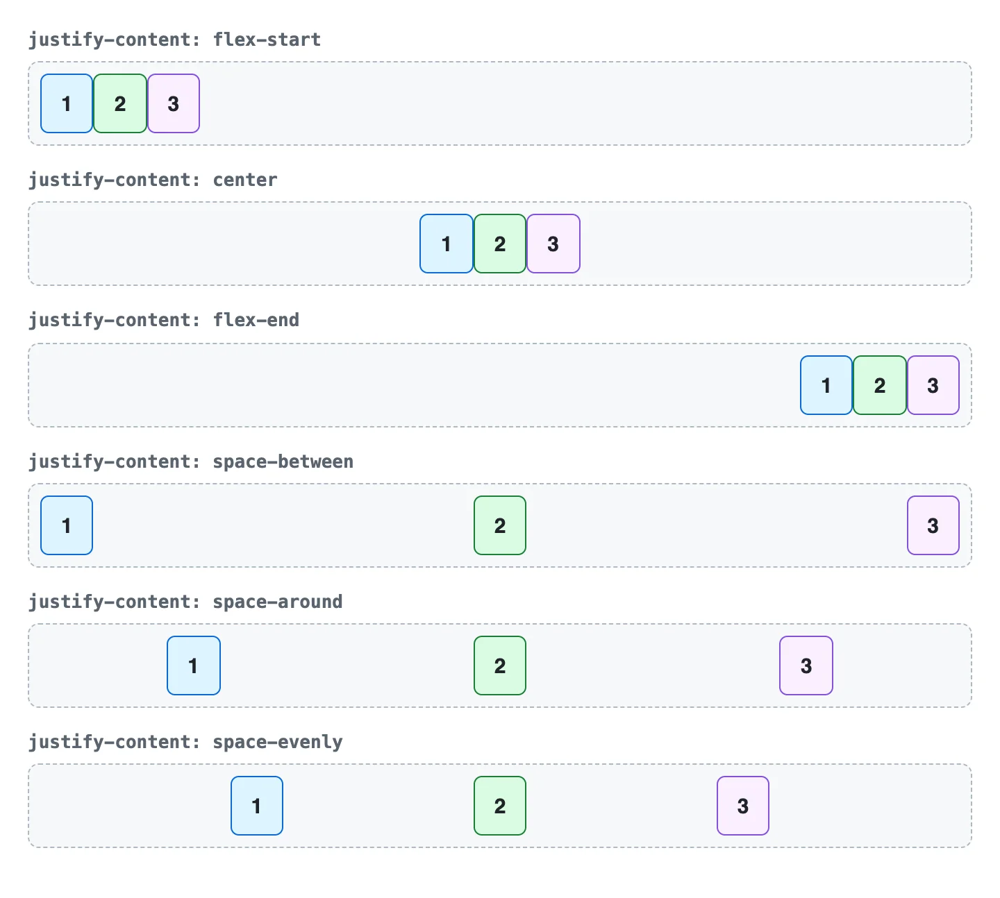
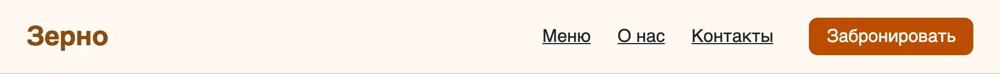

Flexbox и Grid
Раскладка элементов на странице
После урока вы сможете
- Понимать поток документа — блочные и строчные элементы
- Раскладывать элементы в ряд и по центру через Flexbox
- Строить сетку из колонок и макет страницы через Grid
- Выбирать между Flexbox и Grid для типовых задач
Урок за минуту
- Без раскладки блоки идут сверху вниз, строчные элементы — в строку. Это поток документа
display: flexу родителя ставит детей в ряд.justify-content— вдоль ряда,align-items— поперёкgap— расстояние между элементами, margin для этого больше не нуженdisplay: gridиgrid-template-columns: repeat(3, 1fr)— сетка из трёх равных колонок- Flexbox — одна линия элементов, Grid — сетка из строк и колонок
Поток документа
Пока вы не включили раскладку, браузер расставляет элементы по потоку. Блочные элементы — h1, p, div, section — занимают всю ширину и встают друг под другом. Строчные — a, strong, span — живут внутри строки, как слова.

Свойство display меняет поведение элемента. Главные значения:
| Значение | Что делает |
|---|---|
block |
Новая строка, вся ширина |
inline |
В строку с текстом, ширину и высоту задать нельзя |
inline-block |
В строку, но размеры задать можно — например, кнопка |
none |
Элемент исчезает со страницы |
flex |
Дети встают в ряд — раскладка Flexbox |
grid |
Дети встают в сетку — раскладка Grid |
Flexbox: элементы в ряд
Самая частая задача — поставить элементы в ряд: логотип слева, меню справа. Для этого display: flex пишут родителю, и все его прямые дети становятся в ряд.
Удалите display: flex у .header — меню упадёт под логотип. Уберите justify-content — всё прижмётся влево.
Две оси
У Flexbox две оси. Вдоль главной стоят элементы, по ней выравнивает justify-content. Поперёк — align-items.

flex-direction: column поворачивает главную ось вниз: элементы встают колонкой, а justify-content и align-items меняются ролями.
justify-content: вдоль ряда

Чаще всего нужны два значения: space-between — края по сторонам, как в шапке, и center — всё по центру.
align-items: поперёк ряда

Центрирование по вертикали и горизонтали — задача, над которой раньше мучились годами. С Flexbox это три строки:
Промежутки, перенос и размеры
gap: 16px— расстояние между элементами. Не нужно ставить margin каждому и убирать у последнего.flex-wrap: wrap— не влезли в ряд — переносятся на следующую строку.flex: 1у элемента — занять всё свободное место. Удобно для поля поиска.margin-left: autoу элемента — отодвинуть его и всех, кто после него, к правому краю ряда. Так в шапке делают «логотип слева, всё остальное справа».
Grid: сетка из колонок
Когда нужны и строки, и колонки — каталог, галерея, макет страницы, — берите Grid. Колонки описывают у родителя:

.catalog {
display: grid;
grid-template-columns: repeat(3, 1fr); /* три колонки по одной доле */
gap: 16px;
}fr — доля свободного места: 1fr 2fr — вторая колонка вдвое шире первой. repeat(3, 1fr) — то же, что 1fr 1fr 1fr.
Поменяйте 3 на 2, потом 1fr на 200px. А теперь замените всю строку на repeat(auto-fill, minmax(150px, 1fr)) — колонок станет столько, сколько влезет. Это адаптивная сетка без единого медиазапроса.
Grid: макет страницы
Grid умеет раскладывать и всю страницу. grid-template-areas — схема страницы прямо в CSS, словами:
Поменяйте местами слова aside и main в схеме — колонки поменяются местами, а HTML останется прежним.
Flexbox или Grid
| Задача | Что взять |
|---|---|
| Шапка: логотип слева, меню справа | Flexbox, space-between |
| Пункты меню в ряд | Flexbox, gap |
| Кнопка с иконкой и текстом | Flexbox, align-items: center |
| Что-то точно по центру | Flexbox или Grid с place-items: center |
| Каталог карточек | Grid, repeat(…) |
| Макет страницы | Grid, grid-template-areas |
Правило: одна линия — Flexbox, строки и колонки сразу — Grid. Их можно вкладывать: сетка карточек на Grid, а внутри карточки — Flexbox.
Значки flex и grid в DevTools
В Elements рядом с элементом, у которого display: flex или grid, есть кнопка-значок. Нажмите — на странице появятся линии сетки и промежутки.
Частые ошибки
display: flex не у того элемента
Flex пишут родителю, а двигаются его прямые дети. Если элементы не встают в ряд, проверьте, что display: flex стоит у их общего родителя, а не у них самих.
Путают justify и align
justify-content — вдоль главной оси, align-items — поперёк. Если после flex-direction: column центрирование «сломалось», — оси поменялись местами.
Отступы между карточками через margin
Появляются лишние отступы у крайних элементов. Для промежутков — gap.
Шпаргалка
/* ряд: края по сторонам, по центру по вертикали */
.row { display: flex; justify-content: space-between; align-items: center; gap: 16px; }
/* точно по центру */
.center { display: grid; place-items: center; }
/* сетка карточек, которая сама подстраивается под ширину */
.grid { display: grid; grid-template-columns: repeat(auto-fill, minmax(220px, 1fr)); gap: 24px; }Квиз
- 1. Что делает
display: flex?Flex включают у родителя, раскладываются его прямые дети. - 2. Как в шапке прижать логотип влево, а меню вправо?space-between прижимает первый и последний элемент к краям.
- 3. Элементы стоят в ряд, но разной высоты прилипли к верху. Как выровнять их по центру по вертикали?align-items работает поперёк главной оси, в обычном ряду — по вертикали.
- 4. Чем задать расстояние 16px между карточками?gap ставит промежутки только между элементами, без лишних отступов по краям.
- 5. Что значит
grid-template-columns: 1fr 2fr?fr — доля свободного места. Всего три доли, вторая колонка получает две. - 6. Для каталога товаров из многих карточек лучше подходит…Каталог — строки и колонки одновременно. Это задача для Grid.
- 7. Что сделает
flex: 1у поля поиска внутри flex-ряда?flex 1 — «забрать свободное место». Кнопка рядом сохранит свой размер.
Задания
Шапка сайта
В homework/07-layout/task-1 есть разметка шапки: логотип, меню из трёх ссылок и кнопка. Сделайте раскладку в css/style.css:
Перетащите картинку сюда, вставьте из буфера ⌘+V или
- Логотип слева, меню и кнопка справа
- Всё выровнено по центру по вертикали
- Между ссылками меню 24px через
gap - Плашка проверок: всё пройдено

Каталог на Grid
В task-2 шесть карточек кофе. Разложите их сеткой:
Перетащите картинку сюда, вставьте из буфера ⌘+V или
- Три колонки одинаковой ширины
- Промежутки между карточками 24px
- Внутри карточки: название слева, цена справа, на одной линии — через Flexbox
- Плашка проверок: всё пройдено
Макет страницы
В task-3 есть шапка, боковое меню, основное содержимое и подвал. Разложите их через grid-template-areas:
Перетащите картинку сюда, вставьте из буфера ⌘+V или
- Шапка и подвал на всю ширину
- Боковое меню слева шириной 240px, содержимое справа занимает остальное
- Промежутки между областями 16px
- Плашка проверок: всё пройдено
Лягушки и морковки
Пройдите две игры на русском:
- Flexbox Froggy — все 24 уровня.
- Grid Garden — все 28 уровней.
Перетащите картинку сюда, вставьте из буфера ⌘+V или
- Скриншоты последних уровней обеих игр
- Три свойства из игр, которых нет в уроке, и что они делают
Ответы из полей выше сохраняются в этом браузере сами — можно закрыть страницу и вернуться. Когда закончите, сформируйте отчёт и отправьте архив ментору.
Ответы хранятся отдельно для каждого способа открыть курс: файлом, через npm start или по ссылке на GitHub Pages. Открывайте курс всегда одинаково.